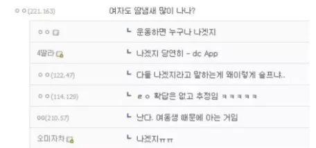

짐작 드립넷

짐작 드립넷
단 컨디션 안좋아서 나는 보릉내는 죽음임. 궁금해하지마 헛구역질 바로 나오고 성욕 싹 사라짐
차이점은 남자 땀냄새는 개씾샹똥구렁내 썩창이라는거
생리기간되면 좆됨.

과음하고 담날 연초반갑피우고 러닝머신 30분하고난후...
얼마나 일찍 뒤질런지 감도 안옴
젊은 여자 땀냄새는 그렇다 치는데 나이든 여자의 시큼한 땀냄새는 ㄹㅇ 토나옴. 지하철이나 버스타면 더운날 등산 갔다온 할지매들
환상이 가득한 댓글들이네 ㅋㅋㅋ
유전자마다 달라. 같은 땀냄새여도 그걸 매력적이게 느끼는 조합이 있고, 역하다고 느낄수도있음
또 사람마다 다르기도하고. 여중 여고생들 앞머리만 감는애들많은데 근처만가도 냄새심한애들있고, 현체갔다가 땀에절어있는데도 아예 냄새안나는애들도 있고
각자 퇴근하고 여친이랑 모텔가면 씻기전에 바로 코박죽하면 그 특유의 냄새가 개맛도리임. 살짝 지른내+쿰쿰한 냄새+은은한 향수냄새 쓰읍 하